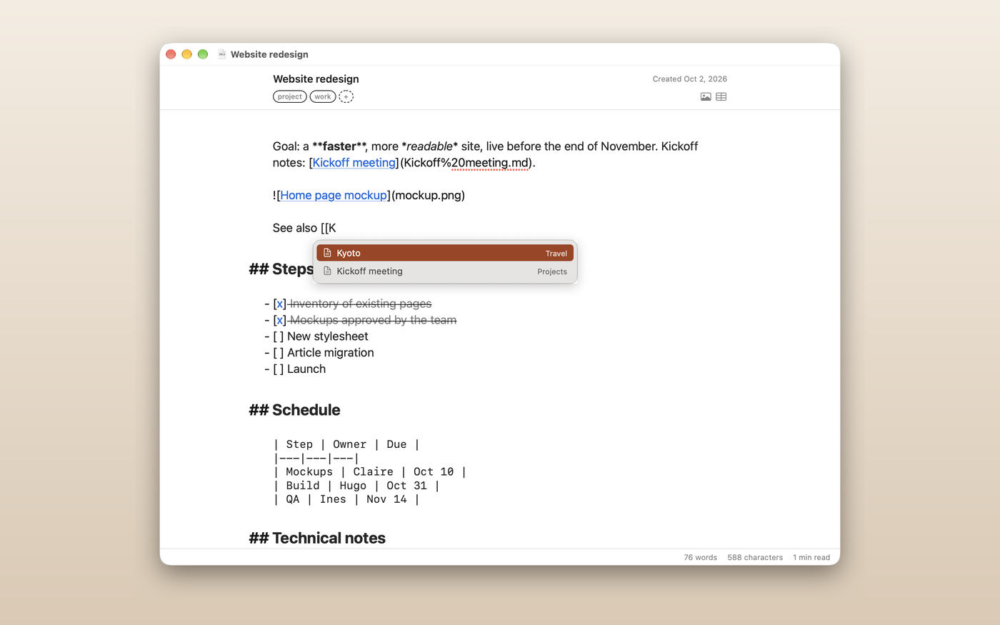
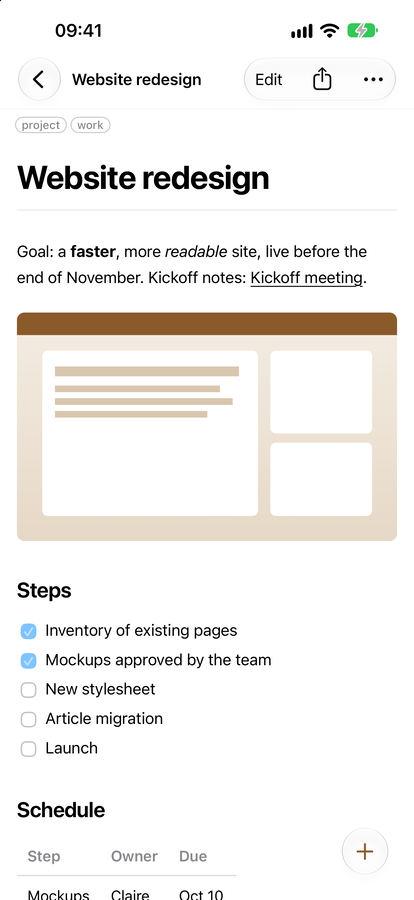
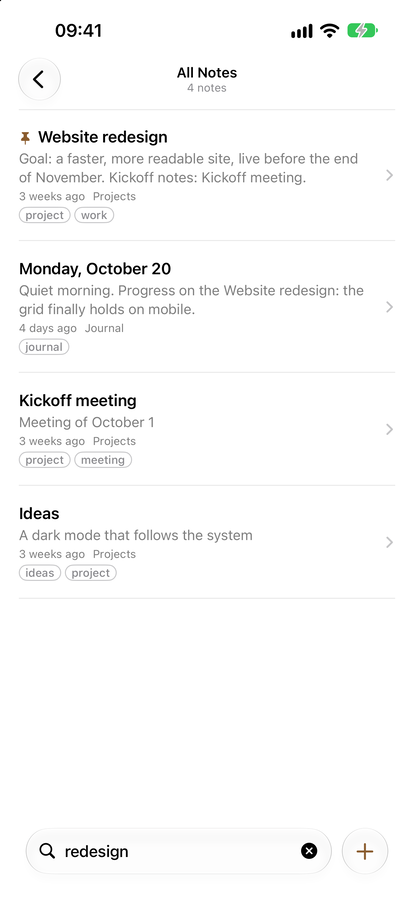
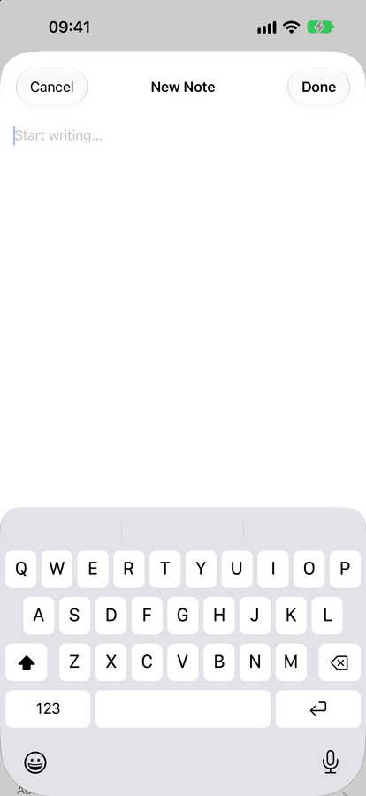

User manual
Everything you need to find, read, sort and write your notes. The same text ships inside the app, in the Welcome folder.
Read and Search
The window has three columns: folders and tags on the left, the list of notes in the middle, the note, formatted on the right.

The toolbar
Each group of buttons sits above the column it acts on.
- Above the folders: show or hide the sidebar, and New Folder.
- Above the list: the brown + and Sort in one capsule, then the search field. + makes a new note (from your template, if you chose one); its ⌄ lists your templates (see Write). Sort's menu orders the list by modification date, creation date or title, ascending or not.
- Above the note: the editor button — a click opens the note in your editor, its ⌄ menu opens it in the other one or picks the external app — and Detach (the note in a reading window of its own); then **Export as PDF, Print and Share; then ◐**, which switches between light and dark (hold it to choose Light, Dark or System), and Settings.
Tags, pins, favourites, moving and renaming are in the File menu and in the context menu of a note (Control-click).
The list
The header of the list names what it shows (a folder, Inbox, All Notes…) and, on the right, how many notes it holds. While you search, the count is followed by the order of the results, such as by relevance (see Search).
Moving around
- Click a folder to list its notes and the notes of its subfolders (a setting lets you restrict it to the folder itself).
- Inbox holds new notes that are not filed yet. All Notes is the whole library. Trash keeps what you deleted until you empty it.
- With the keyboard: ← and → move between the folders and the list, ↑ and ↓ move inside a column, Space opens or closes a folder.
Filters above the list
When you pick one of your folders or a tag in the sidebar, it shows in the header of the list as a small chip with its symbol and name.
- Click the × of a chip to take that filter off.
⌘-click several tags in the sidebar to combine them: the list keeps the notes that carry all of them, one chip per tag.- Inbox, All Notes, Untagged and Trash have no chip: they are places, not filters.
Search
Press ⌘F (or click the search field) and type. The list narrows while you type, over titles, file names (without the .md), tags and the full text of every note, ignoring case and accents.
While you search, results come in order of relevance: a match in the title or the file name first, then in a tag, then in the text; the order you chose breaks ties. To see them in another order, open Sort during the search and pick a date or the title; Relevance (While Searching), at the top of the same menu, puts the best matches first again. The header of the list always says the order in force, for example by relevance or by modification date. Shokonotes keeps that choice for later searches until you quit.
When the search field is empty and takes the keyboard (a click, or ⌘F), a small card under it recalls what follows; typing or Esc closes it. The same card is in Edit ▸ Search Syntax… and Help ▸ Search Syntax…. Click an example to try it.
| You type | You get | |
|---|---|---|
budget plan | notes that contain both words | |
"plan 2027" | notes that contain this exact phrase | |
budget -draft | notes with budget but not draft | |
budget -"first draft" | notes with budget but not the phrase first draft | |
| `budget \ | plan` | notes with either word (the bar is a word of its own, between spaces) |
rm "-rf" | quotes search for text literally, here text that starts with a minus sign |
A minus sign in front of a word excludes every note that contains it, so to look for something like -rf put it in quotes.
Esc works the same in every column, the folders, the list and the note: it first closes the find bar of the note if it is open, then clears the text of the search, then the tag chips. It never leaves the folder you are in; that chip goes only with its × or from the sidebar.
⌘↩ (Command-Return) in the search field opens the note whose title, or file name, is what you typed, as Return opens it. If there is none, it creates it: search, find nothing, create. The new note is made as ⌘N makes one, in the folder you are in and from your default template if you chose one.
If your library is in iCloud Drive, a note whose file is not downloaded to this Mac is searched by its title, file name and tags, not by its text. The header of the list says how many, for example 3 notes not searched (in iCloud), and so does the message shown when nothing matches; the iPhone shows the same line.
Once a note is open, search highlights the words inside it; ⌘G jumps to the next match and ⇧⌘G to the previous one.
Reading is read-only
Selecting, browsing and searching never put you in edit mode. A note changes only when you explicitly open it for writing (see Write).
With the keyboard on the note, ↑ and ↓, Space, Page Up / Page Down, Home and End scroll it; ⇧ with the arrows selects text and ⌘C copies it; ← goes back to the list.
A link to another note of the library, written with a relative path such as [see](../Projects/Plan.md), selects that note when you click it. A link to a web page opens in your browser.
Linked From
Under the note, Linked From lists the notes whose text links to it. Click one to select it. The panel appears only when such notes exist, and its arrow folds it away.
Pictures from the web
Shokonotes makes no network access at all. A picture whose address is on the web (https://…) is never downloaded: the note shows a quiet frame with the name of the site and the picture's description instead. If the picture is inside a link, a click still opens that link in your browser. Pictures kept next to your notes show as usual.
Pins and favourites
Pin a note to keep it at the top of its list: right-click it, swipe the row, or choose File ▸ Pin. A pinned note is marked with a small brown dot. Notes, folders and tags can be made favourites from their context menu, and a folder can get its own symbol (right-click ▸ Choose Symbol…).
When you have many tags, the sidebar shows the twelve you use most, followed by All Tags…, which unfolds the rest. A long list of favourites ends the same way, with All Favourites….
Reading in its own window
To keep a note in view, for example on a second display, click Detach in the toolbar, choose File ▸ Detach Note for Reading (⌥⌘Return), or right-click a note. A window opens with that note, read-only, in your preview theme. It follows the file when it changes or is renamed, and you can go full screen. Close it with ⌘W.
Organise
Shokonotes gives you two ways to sort notes, and they work together.
Folders
A folder is a real folder on your disk. Use them for where a note belongs: one folder per activity, project, or part of your life.
⇧⌘Ncreates a folder.⌘Rrenames what has the keyboard: the selected note in the list (its file is renamed too), or the selected folder in the sidebar. Control-click ▸ Rename… does the same.- Drag a note onto a folder to move it, or drag a folder onto another one. The insertion line shows the level the folder will land on.
- File ▸ Move To… (
⇧⌘M, also in the context menu of a note) moves the selected notes without the mouse: type a few letters to narrow the list of folders, ↑ and ↓ to choose, Return to move. - Folders can be nested as deep as you like.
- To delete a folder, Control-click it and choose Delete Folder: its notes go to the Trash.
When other notes link to it
Shokonotes does not rewrite the text of other notes. So before you rename a note that other notes link to, move notes, or rename, move or delete a folder, it says how many links would break, and you choose to go on or to cancel. A move counts both ways: links from other notes to the notes that move, and links written in the moving notes to notes that stay. When nothing would break, nothing is asked. If some notes of an iCloud Drive library are not downloaded to this Mac, their text cannot be read, and the count says “at least”.
Pictures move with their note
When you move notes to another folder (by dragging, or with Move To…), a picture that only they use moves with them and stays next to them, for example in their images folder. A picture that another note also uses stays where it is, and so does one whose name is already taken in the new folder: the moving note's link to it then breaks. Move To… and the link warning say how many pictures move and how many stay.
Tags
A tag is a word attached to a note, stored in the note's own header (see below). A note can have several, and tags cut across folders: a recipe can live in Recipes and also be tagged dinner-party.
- Press
⌃⌘Ton a note to edit its tags. Type, press Return or comma to confirm; suggestions come from the tags you already use, to avoid havingprojectnext toprojects. - Click a tag in the sidebar to list every note that carries it.
⌘-click more tags to keep only the notes that carry all of them. Each tag in force shows as a chip above the list; its × takes it off.

Tags written in the text
If you already write tags inside your notes, Shokonotes can read them. Turn on Settings ▸ Library ▸ Tags ▸ Read #tags written in the text. It is off until you do, so a library you already have shows no change.
- Only the first and the last line of a note are read, and only when they contain nothing but tags, such as
#client #urgent. A#heading, a colour like#ff8800, an issue number and anything inside code are never taken for tags. - These tags are shown like the others, in the lists, in the sidebar and in search. On a note, such a tag carries a small symbol, a document with an arrow, that says it comes from the text. Reading only: the text of a note is never changed. To remove such a tag, delete it from the note itself.
- A tag you use in the text can be copied to the header of a note: click its symbol above the formatted note, or choose Add to the header on it in the tag editor. To do it for the whole library at once, use **Import tags from the text into the headers…** in the same settings. It shows how many notes it will touch and writes to the headers only.
The Trash
⌘⌫ sends the selected notes to the Trash. A note can be restored to the place it came from, until you empty the Trash.
What a note looks like on disk
A note may start with a small header between two --- lines:
---
title: "Start Here"
tags: [welcome]
created: 2026-10-08
---It is optional. Without it, the title is the first line of the note (or the file name, depending on your settings) and the note has no tags. Shokonotes only ever rewrites the lines it owns: title, tags and created.
Write
Writing happens in a window of its own, never inside the library.
Open a note for writing
Press Return, double-click a note, or press ⌘N — or click the brown + in the toolbar — for a new one. Which editor opens is your choice, in Settings ▸ Editing ▸ Open notes with:
- Shokonotes' editor — the default on a new installation (a Mac that ran an earlier version keeps the editor it used): a quiet Markdown editor with colouring, list continuation and code-block completion. Your text is saved continuously: there is no Save button.
- An external app — Typora, VS Code, BBEdit, TextEdit… Shokonotes picks up your changes the moment the file is saved.
⌘O opens a note in the editor you chose, ⌥⌘O in the other one, and the editor button in the toolbar does the same. Both shortcuts can be changed in Settings ▸ Shortcuts.
The editor
- The title sits at the top; editing it renames the file too: title and file name are the same thing.
- Tags and the creation date are shown in a small bar above the text.
⌘Wcloses the editor and returns to the library.- The text shown is the real Markdown, symbols included, in a lighter ink so the words come first. The
#of headings and the bullets of lists sit in the margin, and nothing is ever hidden. Markdown Syntax next to this manual shows what each symbol does.

If the file changes elsewhere while you write (another app, another device), a strip above the text says This note was changed outside Shokonotes., and nothing is written until you choose:
- Keep My Version — your text replaces the one on disk.
- Use Disk Version — the note takes the text on disk;
⌘Zbrings yours back. - Keep Both — your text is written to a new note next to this one, named after it with “(copy)” (its title in the header too, when it has one), which opens in its own window; this note takes the text on disk.
Closing the window during such a conflict asks the same question.
A new note you leave empty is not kept. When you close Shokonotes' editor on a note it has just created (⌘N, the +, a template, the quick note) without changing anything, the note is removed, so empty notes do not pile up. Quitting with ⌘Q does the same as closing the window. A pinned or favourite note is kept. If you typed something but did not name it, the note takes its name from its first line when you close the window. Notes you open in an external app are never removed or renamed this way.
Files from the Finder
In the Finder, Open With ▸ Shokonotes on a Markdown file (.md, .markdown) or a plain text file (.txt), or drop it on the Dock icon. Other kinds of text file, such as source code, are not offered. A note of your library is shown in the library and opens as Return opens it. Any other file opens in Shokonotes' editor on its own, marked Not in your library under its title: it is saved as you type, as a note is, but it is not added to the library, no image can be dropped into it, and its title does not rename it (macOS gives access to the file, not to its folder). Shokonotes never makes itself the default app for these files: choose it in the Finder's Get Info ▸ Open with if you want a double-click to open them here.
Formatting from the keyboard
The Format menu works on the selection or the current line:
| Shortcut | Does |
|---|---|
⌘B / ⌘I | bold / italic (again to remove) |
⇧⌘C | inline code |
⌘K | link |
⌘Return | tick or untick the task - [ ] of the line |
⌥⌘F | footnote: [^1] at the cursor, its line at the end of the note, the cursor in it |
⌥⌘↑ / ⌥⌘↓ | move the line up or down |
⇧⌘D | duplicate the line |
More gestures:
- Click the
[ ]of a task to tick it; a done task is dimmed and struck through. - Type
*,_,[or a backquote over a selection to wrap it. - Numbered lists are renumbered when you add, move or remove lines.
- Return continues a list or a quote; Tab and ⇧Tab indent.
Paste and drop
- Paste a web address over selected words and they become a link.
- Paste formatted text (from Safari, Mail, Pages…) and it arrives as clean Markdown: headings, bold, lists, links, quotes, code, simple tables. Edit ▸ Paste and Match Style (
⌥⇧⌘V) pastes the plain text as it is. - Drag a note from the list, or any file from the Finder, into the text: a relative link to it is written where you drop it.
- Edit ▸ Copy as Rich Text copies the selection, or the whole note, formatted, for Mail or Pages.
Links between notes
- Type
[[and a list of your notes opens under the cursor; keep typing to narrow it, ↑ and ↓ to choose, Return or Tab to insert,Escto close. Shokonotes writes an ordinary Markdown link,[Plan](../Projects/Plan.md), that any other app understands: never[[…]]in the file. The same list helps after](when you write a link by hand. ⌘-click a link to follow it: a note of the library opens (in this editor when it is your default, otherwise it is selected in the library), a web address opens in your browser, an e-mail address in Mail.- Under the formatted note in the library, Linked From lists the notes that point to it.
Templates
A template is the text a new note starts with: the headings of a meeting, the questions of a journal, a reading sheet. Make them in Settings ▸ Templates: + adds one, − moves it to the Trash (Restore, in the library's Trash, puts it back). Each has a name and a text — Markdown, with a YAML header if you like, to give every new note its tags for instance. What you type is saved as you go.
Under the list, Suggestions offers four ready-made templates — Meeting, Journal, Reading Notes, Task List: Add copies one into your templates folder, where you edit it like any other.
If the template's file changes elsewhere while you edit it (another device, another app), nothing is written: your text stays, and you choose Keep My Text or Use the Version on Disk.
Three variables are replaced when a note is created:
| Variable | Becomes |
|---|---|
{{date}} | today's date, written the way your Mac writes dates |
{{time}} (or {{heure}}) | the time, for example 09:30 |
{{title}} (or {{titre}}) | the title of the new note |
The new note is named after the template. {{date}} and {{time}} work in the name too: a template called Journal {{date}} makes a note called Journal followed by today's date. The note is created in the folder you are in, with the tags you are filtering by, and opens in your editor like any new note.
The + button. The brown + in the toolbar creates a new note. Tick Template used by the + button on one template and every click starts from it; with none ticked, + makes a blank note. Its ⌄ (or a long press) opens a menu: New Note, blank; your templates, the one + uses checked; ⌘N makes the same note as a click on +; and Manage Templates…, which opens Settings ▸ Templates. The same templates are in File ▸ New Note from Template and in the context menu of the empty part of the list.
Where they live. Templates are ordinary Markdown files, in a Templates folder at the top of your library (Modèles in French), created with the first template. Shokonotes keeps that folder out of the way: it is not in the sidebar, its files are not in All Notes, in search or in link suggestions. They still sync with your library and open in any app. Only the folder Shokonotes created, or the one you chose, is hidden: a Templates folder you already had stays an ordinary folder (Shokonotes then names its own Shokonotes Templates), and Settings ▸ Templates offers Use the Folder “Templates” as the Templates Folder. There, Stop Using This Folder… makes the templates folder an ordinary folder again; nothing is deleted or moved.
On iPhone. Settings ▸ Templates has the same list, the suggestions, and a Default switch on each template. Touch and hold New Note to list your templates, the default one marked, and start a note from one. A tap on New Note still captures a note into the Inbox.
Views and tools
From the View menu:
- Show Word Count — a quiet strip under the text with words, characters and reading time, for the note or for the selection.
- Focus Mode — everything but the line you are writing fades.
- Typewriter Scrolling — the line you are writing stays in the middle of the window.
- Note Outline (
⌃⌘J) — the headings of the note; type to filter, Return to jump.
Writing Tools. Apple's Writing Tools (proofread, rewrite, summarise) work in the text, from its context menu. Their result arrives as plain text, in one step ⌘Z can undo, and they never reach the header of the note. They are a macOS feature, not Shokonotes': depending on the request, Apple may process it on its Private Cloud Compute servers. Shokonotes itself never touches the network.
Quick note, from anywhere
Press ⌃⌥⌘N in any app: a new note is created in your Inbox and opens in the editor, without taking you away from what you were doing. You can change the shortcut in Settings ▸ Shortcuts. Closed untouched in Shokonotes' editor, it disappears; typed in, it takes its name from its first line.
It works as long as Shokonotes is running, even with its window closed or minimized. To have it ready after every restart, turn on Settings ▸ General ▸ Open Shokonotes at login: the app then starts in the background, without opening its window.
Images
Three ways to add a picture, all from the editor:
- Drag one or several image files onto the text.
- Paste a screenshot or a copied image with
⌘V. - Click the picture button, or choose Edit ▸ Insert Image… (
⇧⌘A).
Shokonotes copies the file into an images folder next to the note and writes the link for you, for example . Your original file is never moved. Names are kept, with a number added if one already exists. ⌘Z removes the link; the copied file stays on disk.
The images folder does not show up in the sidebar unless it contains notes. The links are relative to the note: when you move a note in Shokonotes, the pictures only it uses go with it (see Organise). A note moved in the Finder leaves its pictures behind.
On iPhone, the picture menu next to Done offers your photo library, the Files app, or pasting an image. Photos are converted to JPEG and their location is removed.
Tables
Writing a table by hand is tedious, so Shokonotes has a small grid editor.
- Put the cursor in a table and a Edit Table button appears above it.
⌥⌘Tand Edit ▸ Edit Table… do the same. - Edit ▸ Insert Table… starts a new one.
- Edit cells, set each column's alignment, add or remove rows and columns. The Markdown that will be written is shown below the grid.
- Nothing changes in your note until you click Apply, and
⌘Zundoes the whole table in one step.
The table is written aligned, so it stays readable as plain text. Tables inside a list or a quotation, or with a row that has more cells than the header, cannot be edited safely: the editor says why, and you can edit them as text.
On iPhone, the same grid opens from the table menu in the editor header, next to the picture menu.
iPhone and Sync
Shokonotes has no server and no account. Your notes travel the way any file does: through the sync service you already use.
With iCloud Drive
- On the Mac, keep your notes folder inside iCloud Drive.
- On the iPhone, open Shokonotes, tap Choose Folder… and pick the same folder in iCloud Drive.
On the iPhone
The iPhone app is a companion: search, read, edit, capture.




- Search sits at the bottom of the screen, as in Notes. It understands the same syntax as on the Mac (quotes,
-text,|); tap the empty field to see examples. Notes not yet downloaded from iCloud are searched by title, file name and tags; a line under the results counts them. - Read. At the top of a note, Edit opens it for writing, Share sends it, and the … menu finds a word in the note, pins it, edits its tags, moves it or puts it in the Trash. When other notes link to this one, Linked From in the same menu lists them. A link to another note of the library opens that note.
- Edit. The editor is the Mac's, with a bar above the keyboard. With a hardware keyboard, the Mac's shortcuts work too:
⌘B,⌘I,⌘K,⌘Return(tick a task),⌥⌘F(footnote),⌥⌘↑/⌥⌘↓(move a line),⇧⌘D(duplicate it), Tab and ⇧Tab. Numbered lists are renumbered as on the Mac. - Capture. The compose button at the bottom right, New Note, writes a new note into the Inbox. Touch and hold it to start a note from one of your templates (see Write). In Safari or any other app, Share ▸ Shokonotes saves a page or some text as a note.
Other sync tools
Nextcloud, Syncthing, a Git repository (see Shokonotes and Git), or nothing at all: on the Mac, any folder works. On the iPhone, only folders in iCloud Drive are supported.
Good to know
- The iPhone app makes no network access either: pictures from the web show as a frame with the site's name.
- Shokonotes does not ask for the microphone: to dictate, use the dictation key of the keyboard, in any text field.
- Rename and organise on the Mac; the phone is for capture and reading.
- A folder you did not put in iCloud Drive stays on your Mac only.
Customise
Open Settings with ⌘,. They come in seven tabs.
- General — what closing the window does (by default the app keeps running with its global shortcuts), whether Shokonotes opens at login, the Inbox count on the Dock icon.
- Library — the notes folder, the sample library and the setup assistant, whether identical “conflicted copy” files are cleared automatically, the file extension, the folders to hide, whether folders list the notes of their subfolders, and whether #tags written in the text are read.
- Editing — which editor opens notes (Shokonotes' own, the default on a new installation, or an external app), whether a new note opens in the editor, whether Markdown marks are closed automatically.
- Templates — the texts a new note can start from, their variables, and the one the toolbar's brown + uses (see Write).
- Display — light, dark or system appearance, an opaque sidebar instead of the translucent one, the colour of the selected note (Shokonotes' own tint, or your system's selection colour), what each row of the list shows (excerpt, date, tags, compact rows, first line as the title), and the order of the list.
- Preview — theme, font, size, line spacing and width of the formatted note and of the editor, the title above the note, the size of images, line breaks and typographic punctuation.
- Shortcuts — the two shortcuts that open a note in one editor or the other, and the two global ones: quick note, and show or hide Shokonotes.
The ◐ button in the toolbar switches between light and dark without opening Settings; hold it to choose Light, Dark or System. The button next to it opens Settings.
If the window disappeared
Closing the window does not quit Shokonotes. Bring it back with Window ▸ Library (⌘0), a click on the Dock icon, or the global shortcut ⌃⌥⌘S, which shows and hides the library from any app. Quit with ⌘Q.
Print, export, share
Three buttons above the note: Export as PDF saves a PDF that looks like the preview, Print prints it, and Share sends the note file (Mail, Messages, AirDrop). The same commands are in the File menu (⌘P prints) and in the context menu of a note.
Help
The Help menu has the system's search field: type the name of a command and the menu that holds it opens on it. Help ▸ Search Syntax… recalls what the search field understands.
Headings and Text
Markdown is plain text with a few symbols. This note shows the symbols and what they produce. Open it for writing (Return) to compare.
Headings
Start a line with one to six #:
# Title
## Section
### SubsectionEmphasis
You can write italic with single stars, bold with double stars, both with three, and strike through with double tildes.
*italic* **bold** ***both*** ~~strike through~~Paragraphs and line breaks
A blank line starts a new paragraph. A single line break inside a paragraph is just a space.
Quotes
A line that starts with
>is a quote. It can run over several lines.
A horizontal rule
Three dashes on a line of their own draw a rule:
Lists and Tasks
Bullets
- Start a line with
- - Or with
*- Indent by two spaces to nest
Numbered
- First
- Second
- Third
In the editor, pressing Return at the end of a list item starts the next one. Pressing Return on an empty item ends the list.
Tasks
- ☑ A finished task
- ☐ A task still to do
- ☐ Another one
- [x] done
- [ ] to doLinks and Images
Links
Write the text in square brackets, then the address in parentheses:
[Shokonotes](https://shokonotes.jcbaptiste.com)A bare address between angle brackets works too: https://example.com
Links between notes
Point a link at another note with its path, relative to the note you are writing:
[The plan](../Projects/Plan.md)Clicking it shows that note, on the Mac and on the iPhone. In Shokonotes' editor on the Mac you rarely type the path: type [[, pick the note in the list, and this standard link is written for you. A [[link]] typed in another app stays plain text.
Images
The same, with an exclamation mark in front. The path is relative to the note, so keep pictures next to your notes:
An image at a web address (https://…) is never downloaded: Shokonotes makes no network access. The note shows a quiet frame with the name of the site and the description in brackets instead. Keep pictures next to your notes to see them.
Why relative paths
Your notes are plain files. If you move the folder to another computer, links to files inside it keep working because they never mention where the folder is.
Code
Put a word in backticks for inline code.
For several lines, fence them with three backticks and name the language. The preview colours it, and the editor does the same.
func greet(_ name: String) -> String {
"Hello, \(name)!"
}def greet(name):
return f"Hello, {name}!"echo "Hello" > hello.txtHover a block in the preview to copy its content with one click.

Tables and Quotes
Tables
Separate columns with |, and draw the header line with dashes:
| Fruit | Colour | Season |
| ------ | ------ | ------ |
| Apple | Red | Autumn |
| Cherry | Red | Summer || Fruit | Colour | Season |
|---|---|---|
| Apple | Red | Autumn |
| Cherry | Red | Summer |
Add a colon to align a column: :--- left, :---: centre, ---: right.
Nested quotes
A quote
inside a quote
The header of a note
At the very top of a file, three dashes can open a small header, front matter. Shokonotes uses it for the title, the tags and the creation date:
---
title: "My note"
tags: [idea, work]
created: 2026-10-08
---